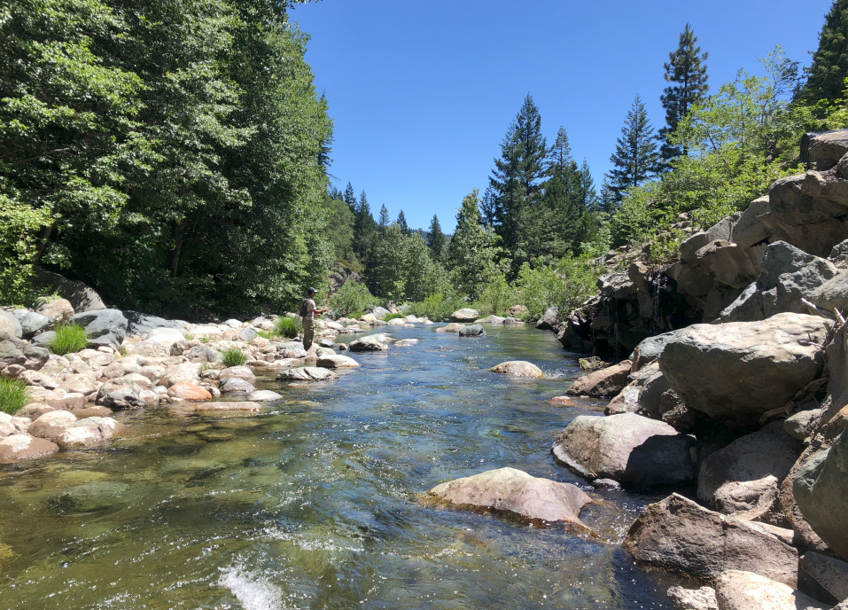
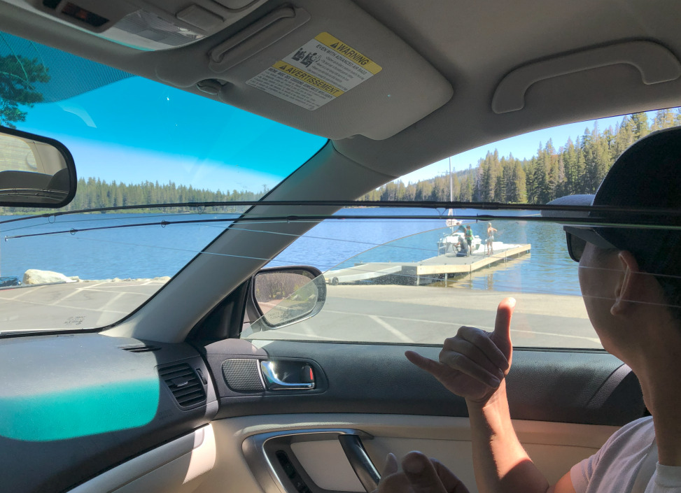
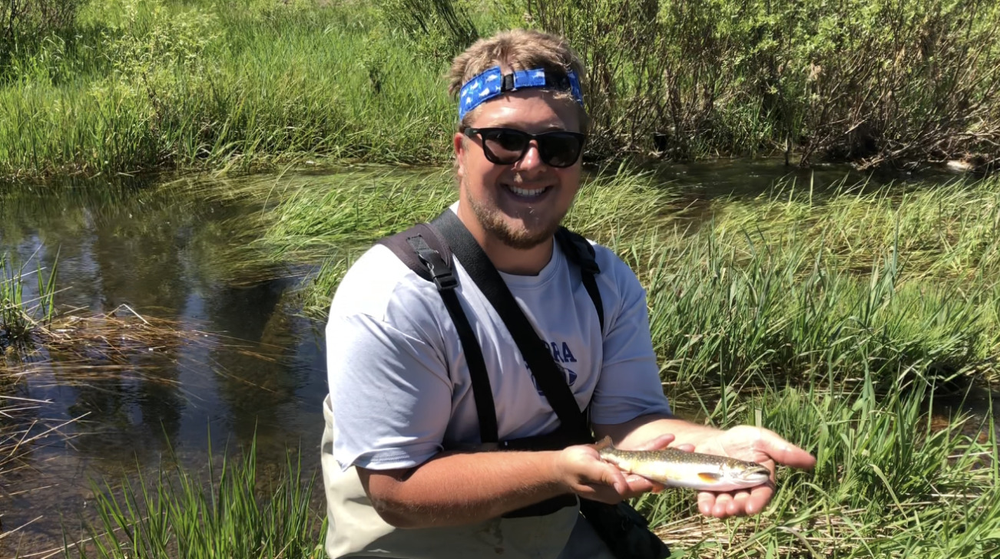
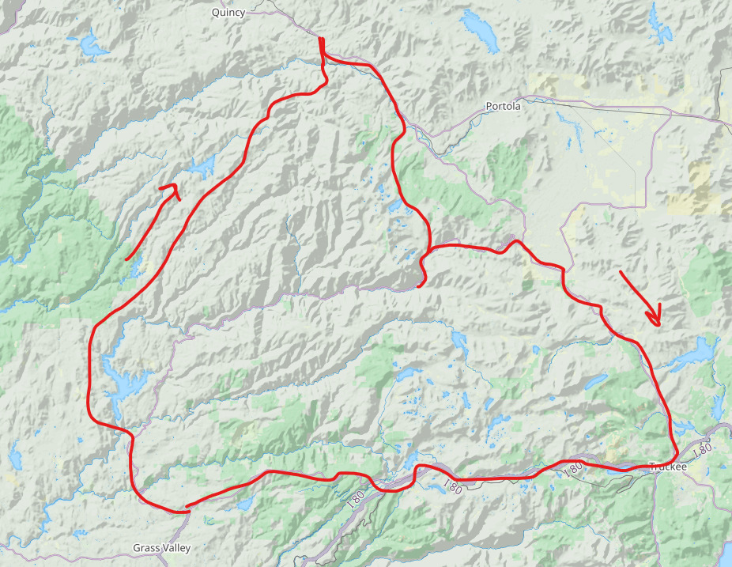

La Porte Rd. Loop, Plumas National Forest - Car Camping
Location: La Porte Rd. Loop, Plumas National Forest Type of trip: Car Camping Date: Jul. 3-5, 2020 People: Sean Yao
Every hour of July 4th weekend 2020 was spent fishing or driving. Sean and I left Nevada City early morning Friday and made our way eastbound on La Porte Rd. Massive logging trucks roamed the area.
We fished the Middle Fork Feather River and a couple of its tributaries. Sean caught a nice 12 incher that he decided to try out his filleting skills on. I always thought filleting a trout was ridiculous, until we fried this one up and put it on some buttery Hawaiian rolls.
An old haggard gold panner with a cigarillo in his mouth strolled up on us fishing the river. We were surprised to see anyone, let alone a near 80 year old down where we were. He was pleased to see us fishing and we were pleased to see him panning.
We then drove our way up the Middle Fork fishing at multiple pull outs along the way. The river was a bit warm and devoid of trout. On a whim we drove through Plumas Eureka State Park and found a nice pull out to camp at.
It was now Saturday, July 4th. We drove out of Plumas Eureka and over the Gold Lake Highway, seeing the Lakes Basin for the first time ever. This seemed like the quintessential place to celebrate America’s birthday, as it was packed with jeeps, boats, and coolers.
There weren’t any nice creeks to fish in the Lakes Basin, so we made our way to the upper reaches of the North Fork Yuba River. Wading this river is painful, as it is made up of only large slippery boulders. Nonetheless, we caught some fish and got some killer views of the Sierra Buttes.
Onward we went, giving our next go at the Little Truckee River alongside Highway 89. Much of this upper section of river is private land. We fished near the campground and only caught a few tiny trout. Evening was spent just outside of truckee.
In the morning, we met up with Erik at a creek off I80. The creek made its path through a huge meadow, providing ample room for casting. We stealthily snuck up on every hole sniping multiple little brook trout along the way. I got some great video clips of Sean hooking up on fish. This ended up being the best spot of the trip.

Clear water in the North Fork Yuba River

Good vibes at Gold Lake

Erik's personal best trout

Map (Date posted: 2025-02-15)